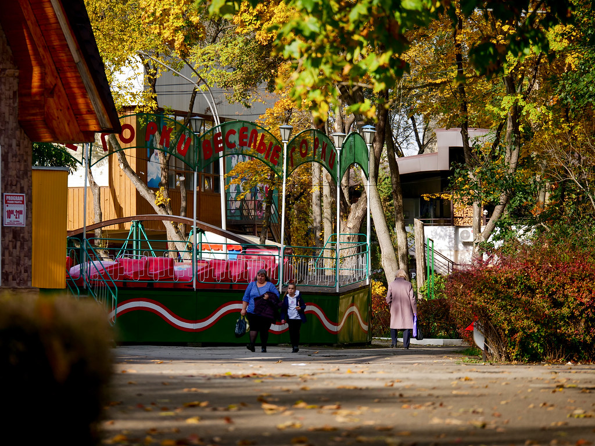
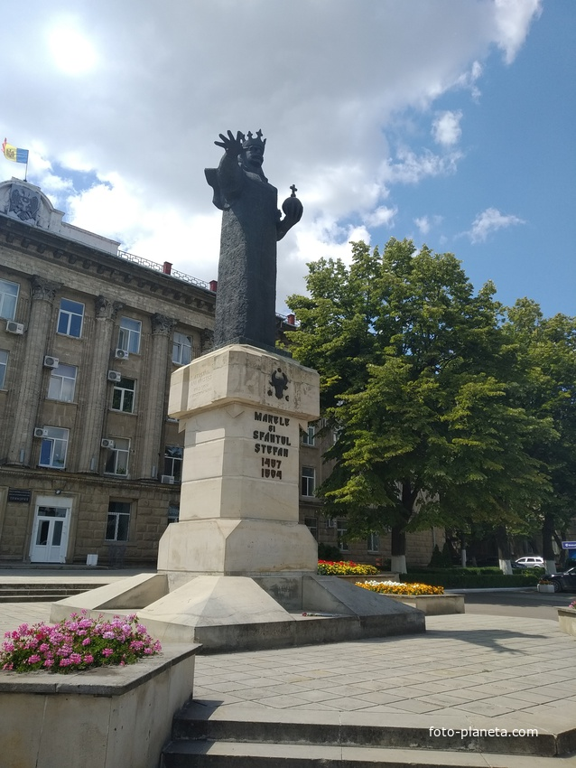
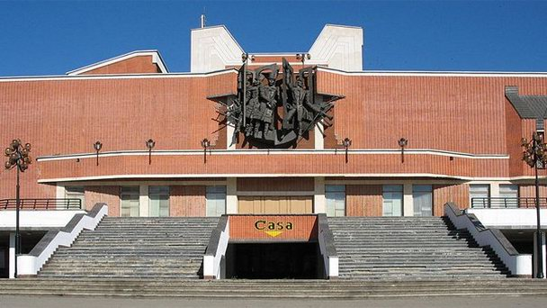

Интересные места
Центральный парк имени Михая Волонтира

Это одно из самых любимых мест отдыха жителей города, где гармонично сочетаются спокойствие природы и атмосфера развлечений. Просторные аллеи, ухоженные зелёные зоны и уютные скамейки создают ощущение уюта, позволяя прогуляться в тени деревьев, провести время с семьёй или просто отдохнуть в центре города. Одновременно здесь можно окунуться в мир ярких эмоций: прокатиться на захватывающих аттракционах, испытать адреналин или весело провести время с детьми на игровых площадках. Музыка, огни и праздничная атмосфера делают это место важной частью городской жизни, где проходят культурные мероприятия, праздники и создаются незабываемые впечатления.
Примария мун. Бельцы

Примэрия — это важный центр управления городом, где принимаются решения, влияющие на жизнь его жителей. Это место сочетает в себе деловую атмосферу и значимость общественной жизни. Здесь решаются вопросы благоустройства, развития инфраструктуры и организации городских мероприятий. Здание примэрии часто становится символом города, отражая его историю и характер. Несмотря на официальность, это пространство открыто для людей: сюда приходят с идеями, предложениями и обращениями, участвуют в обсуждениях и вносят вклад в развитие родного города.
Национальный Театр им. Василе Александри

Одно из главных культурных мест города, где оживает искусство и создаётся особая творческая атмосфера. Величественное здание театра привлекает внимание своей архитектурой, а внутри царит мир сценического мастерства и вдохновения. Здесь зрители могут насладиться драматическими постановками, комедиями и современными спектаклями, погружаясь в эмоции и переживания героев. Театр является важной частью культурной жизни города, объединяя людей, вдохновляя на размышления и даря незабываемые впечатления, будь то спокойный вечер в зале или яркое театральное событие.